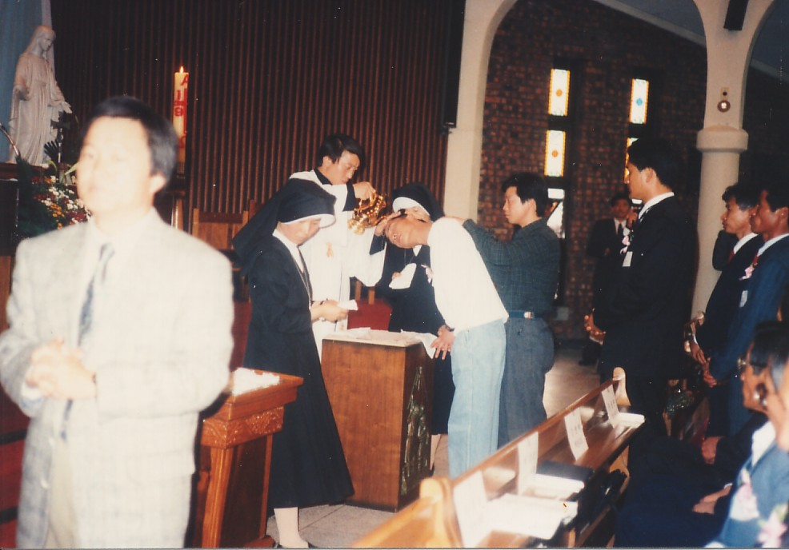
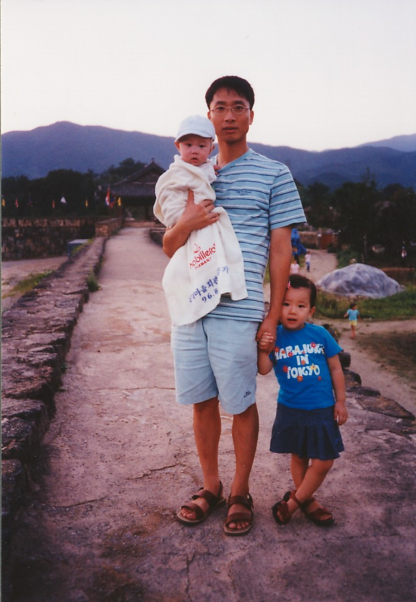

4. 재관의 결혼과 건축사 시절

건축학과를 졸업한 재관은 광주에 있는 한 건축사사무소에서 첫 직장 생활을 시작하게 된다. 동시에 목포의 한 성당에서 청소년부 교리 교사를 겸임하였다. 교리 교사라고는 하지만, 그조차 예수님 말씀을 가르칠만한 정도의 신앙심을 가지지 않았기에 교리 공부의 비중보다는 청소년부 학생들을 데리고 목포 이곳저곳을 놀러다니는 역할을 하였다.
재관의 이러한 방식이 청소년부의 마음을 움직였는지, 재관의 결혼식에 많은 학생들이 재관을 축하해주기 위해 참석하였다. 잠깐, 재관이 누구랑 결혼을 했냐고?
바로 교리 수업을 하던 성당 사무실에서 사무원으로 근무하던 은진이다. 세 번째 사진 속 포박당한 여성이 바로 은진인데, 은진은 재관이 성당에서 보여주는 성실함에 마음이 갔다고 필자에게 답해준 적이 있다.
재관은 29세가 되는 1998년 12월 6일, 교리 수업을 하였고 은진과 만나게 된 성당에서 결혼식을 올린다. 추가로, 재관은 학생 시절 어떤 집의 무화과를 몰래 따서 먹은 적이 있는데 그 집은 바로 은진의 집이었다. 은진의 둘째 언니가 재관과 재관의 친구들에게 몰래 먹지 말라고 소리를 쳤었다고 한다.
재관은 결혼 후에도 건축사사무소에서 계속 근무했는데, 은진은 결혼한 후 처음으로 받아본 재관의 급여 명세서에 98만원이 찍혀있는 것을 보고 매우 충격을 받았다고 한다.
그렇지만 위의 사진과 같이 재관은 건축사사무소에서의 생활이 어느 정도 만족스러웠는지 쉽게 볼 수 없는 춤사위를 보여주었다. 덧붙여 집 근처 갓바위터널을 지나 해안도로를 따라 가다보면 문화예술회관이 나오는데, 재관은 이 건물을 지을 당시 건축 감독으로 일한 적이 있다.

결혼 후 1999년 8월에 딸 민주가, 3년 뒤인 2002년 4월에는 아들 민석이 태어나며 33세의 재관은 두 자녀를 가진 아버지가 되었다. 하지만 이러한 기쁜 일에는 반드시 좋지 않은 일이 따르기 마련인데, 재관은 아들 민석이 태어날 당시 정신적으로 매우 힘든 상황이었다. 이는 은진도 겪은 정신적 문제였는데, 정신이 육체를 지배한다는 말은 틀린 것이 아니기에 재관은 몸도 마음도 힘든 어둠의 터널을 지나고 있었다.
시간과 스스로의 노력, 국선도 등을 통하여 재관은 점차 정신적인 안정을 찾아갔다. 이 즈음 재관은 게임에 푹 빠져 돈까지 써가며 밤새 게임을 했고, 은진과의 다툼이 잦아지기도 했다. 필자도 재관이 즐겨 하던 게임이 어렴풋이 기억이 난다.
재관은 건축사사무소에서 계속 근무하는 것이 그다지 안정적이라고 느끼지 못하였는지, 또 인생의 리프레시가 필요하다고 느꼈는지 퇴근 후와 주말에 도서관에서 공부를 하며 보다 안정적인 공무원 시험을 준비하였다. 당시 육아를 혼자 도맡아해야 했던 은진은 힘들었지만 공부하는 재관 역시 많이 힘들어보였다고 밝혔다.
재관은 두 번의 시도 끝에 2005년 기술직 공무원 시험에 합격하여 공무원으로서 새로운 삶을 시작하게 된다.